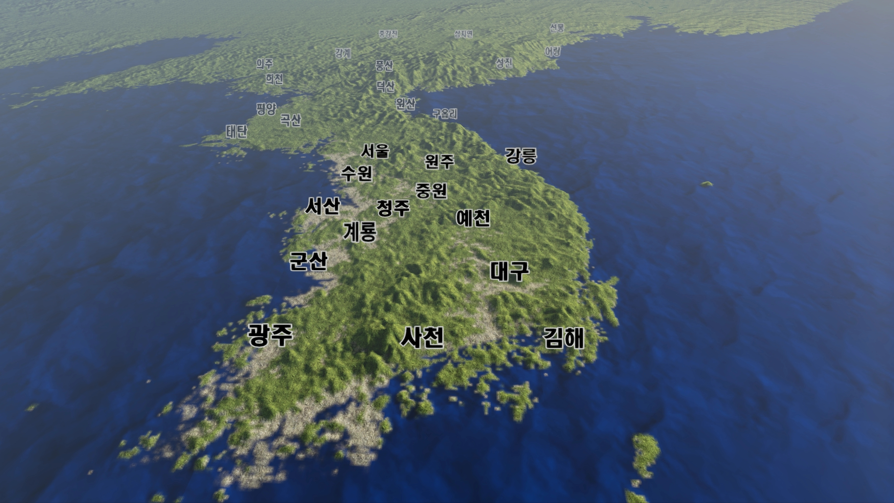

<html xmlns="http://www.w3.org/1999/xhtml" lang="ko" xml:lang="ko">
<head>
	<meta http-equiv="X-UA-Compatible" content="IE=edge">
    <meta charset="utf-8">
 	<title>horizontal</title>
	<link href="css/layout.css" rel="stylesheet" />
	<script src="js/jquery-latest.min.js"></script>
	<script language="JavaScript" src="js/color_picker/jq.js"></script>
	<script language="JavaScript" src="js/color_picker/jq.color.js"></script>
	<link rel="stylesheet" href="js/color_picker/ui.colorpicker.css"/>
  	<script src="js/mchart/ColourGradient.js"></script> 
  	<script src="js/mchart/win3d.js"></script> 
  	<script src="js/mchart/chartUtil.js"></script>  	
  	<script src="js/mchart/win3dChart.js"></script>	
  	<script>
	$(document).ready(function() {				
		var fObj = chartUtil.formatDataWin3d(hodo_data);//*4는1일, *8은2일
		var hChart = new HChart($('#chart_container_1'));
		var option = hChart.createOption();
		option.type						= 'hodo';
		option.background_color 		= 'rgba(255,34,0,0.5)';
		option.axis_stroke_color 		= 'rgba(0,0,0,0.5)';
		option.pivot_mode				= 'XY';
		option.x_mark_cnt				= 10;//mark 10개
		option.y_mark_cnt				= 10;
		option.min						= -50;
		option.max						= 50;		
		option.xmin						= -50;
		option.xmax						= 50;
		option.barmin					= 0;
		option.barmax					= 10000;
		//option.toFixedY					= 2;
		option.toFixedX					= 0;
		option.multiYAxis				= false;//이 옵션은 반드시 pivot_mode = 'XY'에서만 동작합니다.
		option.unitLabel_Hori			= 'H';
		option.unitLabel_Verti			= 'm';
		option.unitLabel_3thVal			= 'm/s';
		option.hodo_circle_color 		= 'rgba(200,200,200,1)';
		option.chartTitle				= '3D바람장';	
		option.startDateTime			= fObj['d'];
		option.right_margin				= 0;
		option.gradientBoxWidth			= 20;
		option.gradientBoxHeight		= 30;	
		option.gradientLegendShow		= true;
		option.globalAlpha				= 1;//0~1까지 0:완전투명, 1은 완전불투명
		option.barWidth					= 3;//노랑기둥의 폭을 지정합니다.
		option.windFlagColor			= 'blue';//바람깃의 색상지정
		
		var colours = [
		                {red: 210,green: 206,blue: 233},
		                {red: 185,green: 176,blue: 239},
		                {red: 168,green: 148,blue: 217},
		                {red: 142,green: 123,blue: 202},
		                {red: 122,green: 77,blue: 255},
		                {red: 101,green: 62,blue: 189},
		                {red: 76,green: 28,blue: 228},
		                {red: 49,green: 5,blue: 206}
		                ];//작은숫자 밝게 위컬러, 큰숫자 어둡게 아래컬러				
		
		option.colours			= colours;
		var colourGradientObject = new ColourGradient(option.zmin, option.zmax, colours);
		option.colorObj			= colourGradientObject;
		
		var series =
			 [
 		 	    {s_name:'A상',s_data:fObj['reArr']
		 	    ,s_color:'rgba(55,101,114,1)',s_lineWidth:'1',s_sizeMin:10,s_sizeDefault:10,s_chartType:'dot3d',s_shape:'rectangle',s_shapeColor:'rgba(255,255,0,1)',s_draw:true,s_min:-50,s_max:50},		 	   		 	     	    
			 ];
		option.series = series;
		hChart.redraw(option);
		
		function winresize(){
			hChart.redraw(option);		
		}
		$(window).resize(winresize);

	});//초기화 영역-------------------------------------------------------------
  	</script>	
</head> 
<body style='margin:0;overflow:hidden'>
<div id="chart_container_1" style='position:absolute;float:left;border:0px solid olive;height:100%;width:100%'></div>  
<!--  -->
</body>
</html>

